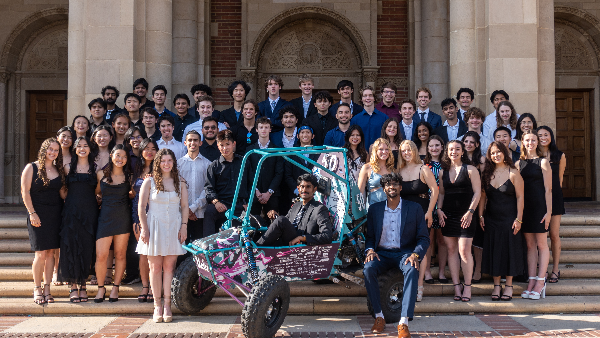
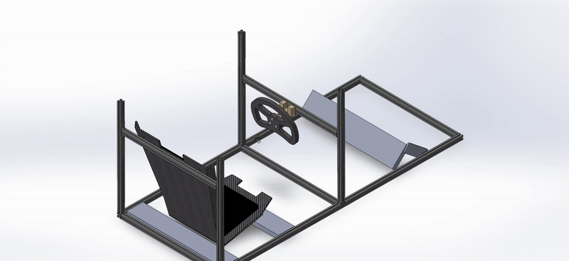
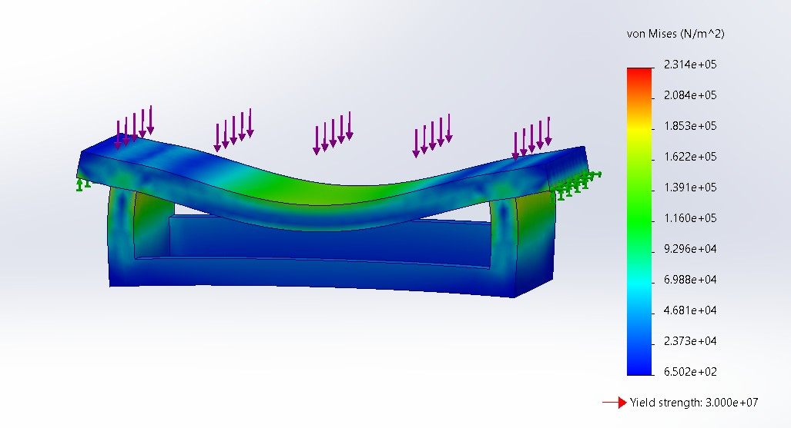
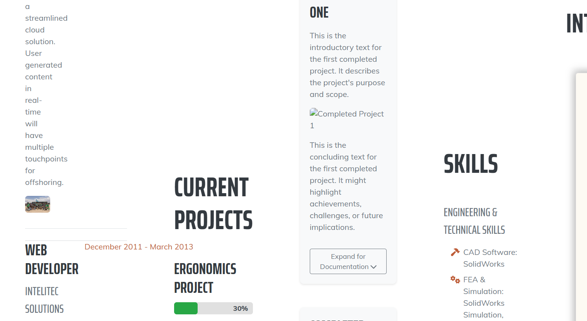
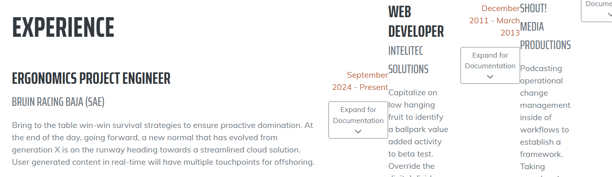
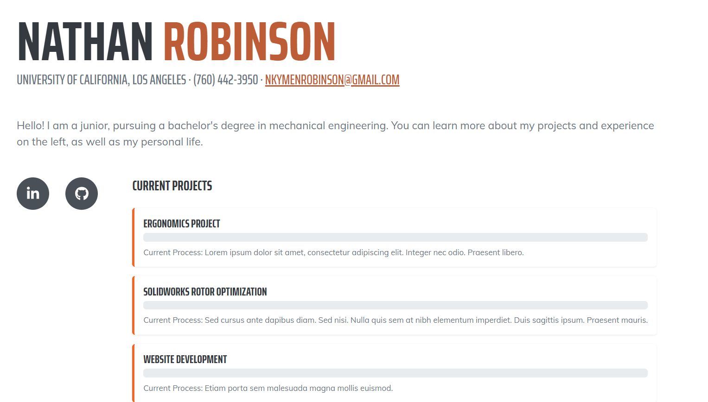
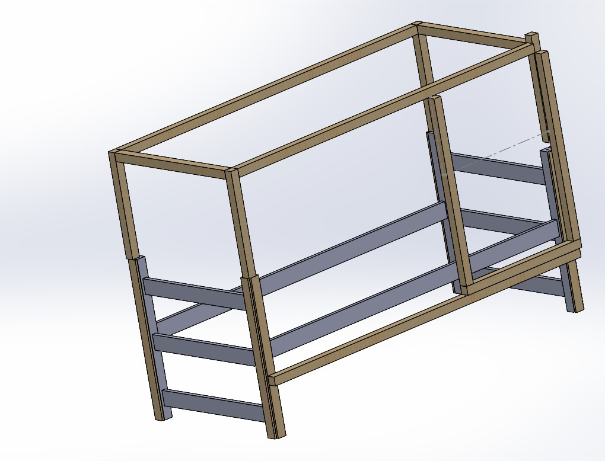
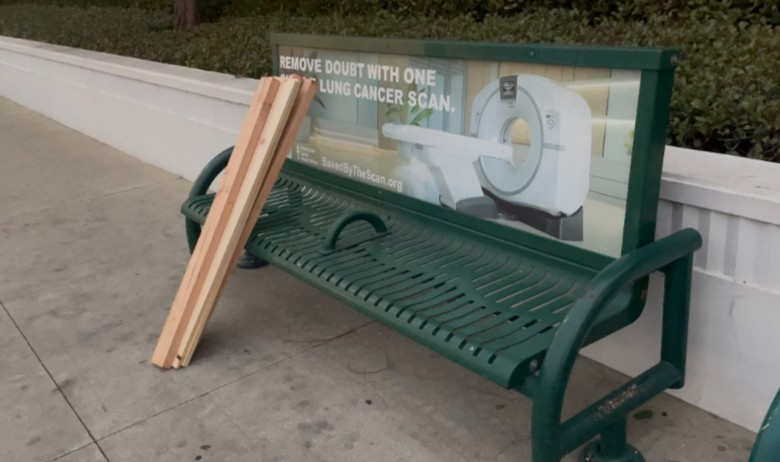
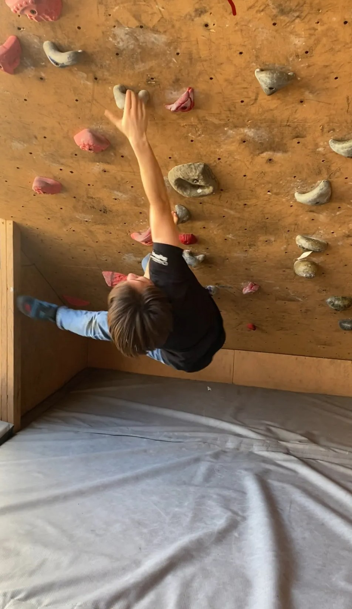

Hello! I am a Junior at UCLA, pursuing a bachelor's degree in Mechanical Engineering. You can learn more about my projects and experience on this website!
Experience
Ergonomics Project Engineer
Bruin Racing Baja (SAE)
September 2024 - Present
Responsible for designing systems that optimize driver comfort as well as range of drivers, allowing for informed chassis design and pedal and steering wheel placement.

Purpose/Goal
The goal of the model is to accurately convert a scan of a real person into a program like SolidWorks to ensure optimal packaging of the interface, while also ensuring compliancy with the clearance rules.
Step 1: Lidar Scan
The scan is taken using a lidar camera, which comes with many of the newer apple products. The scan was taken on the application Polycam, using a free trial. Numerous scans of several drivers were taken.
Step 2: Scan to SolidWorkds
Scans come in a crude state. Mesh simplification is required in MeshLab to decrease the complexity and processing time in SolidWorks. The scans are proportional, but not scaled, meaning accurate measurements of several body parts is necessary to scale the models with minimal error.
To ensure consistency in posture, and clearance, movable models are necessary for an informed chassis design. Fusion 360 was used to separate the limbs of the model. The model was then simplified further in Meshlab before being imported to SolidWorks. Ball joints were used in assembly to allow for joint-like motion.
Step 4: Clearence (Vid low resolution/8 color)
The model itself is great for determining the fit inside the car, but to pass rules, there must be at least a certain amount of distance between each body part and the car. Using the information provided on the rules sheet, the transparent shells were made to have a radius of 3" from each limb. The head needed 6" of clearance, so a scaled up helmet that is already a semisphere was sufficient. Now, when the model is moved, if the transparent shell intersects the car, we know that it is not rules compliant.
Purpose/Goal
The car we want to build needs to serve the driver as best as it can with provided rules constraints. It is my and my Co-PE's job to optimize the position and placement of the steering wheel, pedals, and seat in order for the driver to have the best comfort and agility, while maintaining proper clearances. The ergonomic jig allows for multiple drivers to enter and determine what their optimal angles are. Using that information, we will be able to create a general jig setup for all drivers to use and determine clearances and comfort. The data will then be applied to the manufacturing of the car, allowing us to pass technical inspection, while also allowing for maximal average comfort/agility between drivers.
Step 1: General Design
My Co-PE created the following drawing for guidance. We decided to use 80/20 aluminum extrusions due to their relatively inexpensive nature and T-nut adjustability, meaning the holes and brackets in the drawing are inaccurate. Knowing the general outline of the jig, we split up where he designed the structure of the jig, while I designed the concepts for the steering and pedals.
Step 2: Creating an Adjustable Steering Wheel
The placement of the steering wheel is extremely important, as it determines both the arm height/angle and the range of rotation, as well as the degree of leg separation, which could impact driver clearances. My design incorporates lateral adjustability (this is not too important, as we know the steering wheel will rougly be centered), and angular adjustability. When put into my Co-PE's jig body, the wheel will also be able to move vertically and back and forth, meaning the design allows for all relevant positions. To lock an angle, the design is such that when the bolt is screwed, the blocks of wood will move closer, thus compressing the middle block, stopping the motion through friction.
Step 3: Creating Adjustable Pedal Placememts
The placement of the pedals is also important. As our range of drivers is larger than last year, finding optimal placements that allow for maximum comfort and range is necessary. The design allows for front and back adjustability, as well as pedal angle adjustability.
Step 4: Ergo Jig Assembly

The assebly demonstrates the versatility of the jig. Notice the pedal assembly is different, as we put in a simpler model in the assembly because we only needed to determine the size of the plank of wood.
Step 5: Ergo Jig Manufacturing (within next two weeks)
Step 6: Ergo Jig Driver Data Collection (within next month)
Purpose/Goal
[Describe the purpose of the carbon fiber layup process here — e.g. why CF was chosen for the steering wheel and seat, what properties you were optimizing for (weight, stiffness, strength), and any constraints you were working within.]
Step 1: [Step Title]
[Description of step 1 — e.g. mold preparation, plug creation, surface finish, release agent application, etc.]
Step 2: [Step Title]
[Description of step 2 — e.g. fabric cutting, ply orientation, wet layup vs. prepreg, resin mixing, etc.]
Step 3: [Step Title]
[Description of step 3 — e.g. vacuum bagging, cure cycle, demolding, trimming, finishing, etc.]
Step 4: [Step Title]
[Description of step 4 — e.g. inspection, weight comparison, fitment testing, results, lessons learned, etc.]
Internal Structures Prometheus Member
Rocket Project UCLA
October 2025 - Present
Designed Thrust and Upper Recovery Bulkhead, optimizing for manufacturability and weight.
Purpose/Goal
The Thrust Bulkhead must interface with propulsion and engine, so the contraints of the design are simple. The main challenge is optimizing for weight, whilst not making the part unmanufacturable, as CNC is not allowed for phase 1.
Completed Projects
Home Ergonomic Leg Drawers
My position within my club is Erogonomics PE, so I decided to learn more about ergonomics by designing a discrete leg rester (a drawer). My concept is several drawers to hold items, with each height being specific to offer maximum comfort depending on the position or work flow.
I took a lidar scan of my room because the technology was so cool and only had a week to try it. The scan was sort of irrelevant because I just measured the desk myself and scaled the lidar up. The good news was that the lidar was accurate. I then found the usable desk area (within the legs of the desk) and defined the drawer placement within a future assembly. The usable desk area is the simple gray structure in the middle, and the full desk is the transparent structure.
Step 2: Drawer CAD
This CAD was designed to have the top of the drawers to be very specific heights off the ground, allowing for discrete, adjustable comfort. I wanted to move them back and forth, so that I could choose the level with less resistance, so I looked into the metal sliders, but it was too expensive. I then discovered the cutout could allow for travel without the complex parts. The cutout would be too difficult to manufacture, so instead I opted for an extrusion to serve as a sort of rail (not reflected in the CAD).
Step 3: SolidWorks Simulation

I have no gauge for quality, so I was a bit concerned with the middle of the board, which I assumed would be the weakest part of my build. I assume that the maximal force I would put on it would be 20lbf in an accidental case. Running this study with a material that has weaker properties than my board, SolidWorks claimed that the minimum Factor of Safety was approximately 130.
Step 4: Parts
Using the guidance of my CAD, I had the dimensions of all of the boards. I was about to go to Home Depot, when I realized that we had a decently large shoerack from IKEA, that my mom wanted to throw away. The wood was perfectly good (besides all of the mosquitos living on it). After deconstructing the shoerack, I created an inventory, then did a bit of math to determine the fewest boards for the amount of materials I need.
Step 5: Manufacturing
The only tools I had which were relevant were an electric drill and a handsaw. Any woodworker would be embarassed by the sight of my cuts and technique, but the manufacturing process was relatively smooth, and the drawers operate as intended.
My Website
This website isn't anything amazing, but it was a huge accomplishment for me. To be frank, I plan on completing a lot of projects during my time here, so this is also sort of a placeholder.
This website was developed on github, using primarily Gemini and a template I found. I made major edits to the original edits and had some ideas that I thought were really cool that turned out, in my opinion, to be really cool. Gemini, for a lot of it, was super helpful, but at other times, was rage inducing. It felt a lot like doing a project with a genie who twists and misinterprets your words. I do not know how to code in html, css, or js, though using the code that Gemini gave me and learning the structure, I have gotten the hang of altering very small things myself. All of the text was edited within github myself, though it is fairly simple to figure out for anyone, especially with Gemini providing detailed instructions. The following documentation is more of me sharing what I believed was amusing during the development of this website.
Progress Bar Fiasco

When attempting to get the progress bars on the About section because I had thought it would be neat to immediately see what I was up to, Gemini changed the structure of the website, leaving me with this.
Documentation Fiasco

Gemini really loves to make things columns, because when I asked it to put the documentation to the right, it did it (yay), but it also changed the entire structure of the website (boo)
A Dream Never Achieved

I still like my About section progress bar idea. This is the best I could get it. I didn't really like the aesthetic, and tried to get it smaller and moved more to the right. I eventually did that, but the bars wouldn't fill up correctly, so I had to scrap the idea.
[Project Title]
[Short description of the project — what it is, why you did it, what problem it solves.]
Skills Used: [Skill 1]; [Skill 2]; [Skill 3]
Step 1: [Step Title]
[Description of step 1.]
Step 2: [Step Title]
[Description of step 2.]
Step 3: [Step Title]
[Description of step 3.]
Current Projects
Bed Faraday Cage
60%
Current Process: EMF Shielding to Prevent WiFi Causing Early Morning Distractions
Purpose/Goal
A bed and a faraday cage sound worlds apart, but I believe it is the future... of my living situation for the next year. There is no evidence of EMFs causing any substantial harm, yet I also see no reason not to hide against them. There is also the added bonus that, if working properly, there will be no WiFi in my sleeping area, meaning I will not have an excuse to watch YouTube in the night or morning and adopt a healthy morning and night routine. This is a concept that I thought of when my mom said that sleeping with my phone next to my head can cause tumors, which to be honest I can neither confirm nor deny. To disincentivise phone usage at the start and end of the day, as well as protect me from the light of my roommate and the early sun, I have decided to make the faraday cage bed.
Step 1: CAD of the Initial Structure and Cage Structured

I measured the bed supplied by my school aparment and rebuilt it in SolidWorks (gray part). Using the structure, I designed the cage (pine material in the CAD) to be built alongside the provided structure without needing any fixtures that will damage the provided frame. There is a part on the right that outlines a sort of window that looks to be held on by nothing. The plan for that is for there to be a small piece of wood glued or screwed into the top to serve as a holding place for a hinge, which will allow the section to swing open. The CAD served as more of a guide, as I went to home depot and believe I got scammed becasue the 2x4 was more like a 1.5x3.9. The right side of the CAD looks a little off because even though I mated things correctly, when I opened the CAD file again, SolidWorks believes I made some mating mistakes and decided to punish me for them by moving things around.
Step 2: Supplies and Transportation

I do not have a car, so getting supplies from a 6 mile away Home Depot served as a tricky endeavor. Public transit is awesome, so I rode a few buses for about 1.5 hours to reach The Home Depot, and followed by curated list. I had determined that it was necessary to purchase a lot. However, I have only returned with approximately 80% of the needed materials, as Home Depot was out a few things. Also, they didn't have any 2x2 (it was about 1.5x1.5 [they were scamming]), so I purchased a few 2x4 (more like 1.5x3.9) because it was easier to transport and good for making a structure prototype. Here is the list of things I was supposed to buy:
(7) 2 in x 2 in x 8 ft Furring Strip Boards
(1) 1/8 in x 2 ft x 100 ft 27 Gauge Hardware Cloth
(2) 3 in Mending Plates (4 pack)
(8) 2 in x 1-1/2 in x 1-3/8 in Galvanized Angle
(1) 1 lb 4 in screws (52 ct)
(1) 2-Pack 2 in Butt Door Hinge
(1) 8 oz. Wood Glue
Step 3: Manufacturing General Structure (Within next two weeks)
Step 4: Faraday Shielding Ensuring Conductive When Door Closed (within two weeks)
Step 5: Data Collection (Sleeping) (within three weeks)
[Project Title]
0%
Current Process: [Brief description of what you're currently working on in this project]
Purpose/Goal
[Describe the motivation and goal of this project.]
Data Analysis & Programming Languages: MATLAB, Python, C++, Excel
General Skills
Teamwork & Collaboration
Problem Solving & Critical Thinking
Technical Documentation & Reporting
Project Management
Interests
Music
Apart from engineering, I am very passionate about music. Initially, I was double majoring in violin and Mechanical Engineering before deciding to put all of my focus into engineering. I run a YouTube channel, where I post my compositions and performances.
Books and Films
I am an avid reader. My favorite genre is fantasy and science fiction, and I sometimes write these types of genres in my free time. Additionally, I enjoy films, with my favorite directors being Stanley Kubrick, Denis Villeneuve, and Christopher Nolan. I have a Goodreads and a Letterboxd!
Athletics

I enjoy recreational athletics of nearly any kind (though I cannot guarantee competence). My main forms of activity are running, weightlifting, rock climbing, and gymnastics, with the latter two being my most fun, yet least impressive, as I am terrible at them.